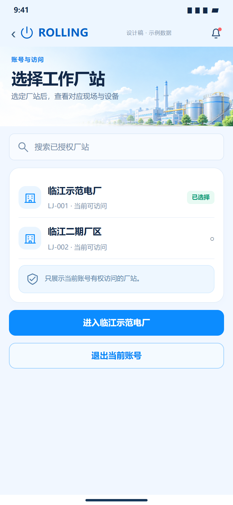
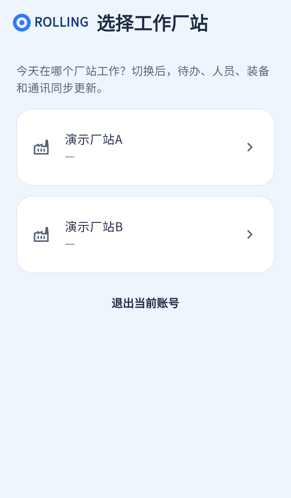

授权与切站已接前端请求；待补搜索、选择确认和视觉密度。
相同 · 已有基础
都展示授权厂站、厂站名与编号、选择结果及退出入口。
不同 · UI与场景
当前普通AppBar、分散大卡，无搜索和底部“进入某厂站”；点击厂站立即切换。
01 / 先看 UI
两图显示宽度统一；设计390px与当前360逻辑宽的画布不同。各图可独立滚动到底，点击“原图”放大。


使用既有组件截图；业务数据为示例。
02 / 逐项核对功能与小交互
入口：登录后选择厂站；现场或我的也可切站 · 当前形态：页面
| 编号 | 部位 | 设计要求 | 当前UI | 功能结论 | 下一步 |
|---|---|---|---|---|---|
| 03-01 | 顶部 | 工厂插画、标题、说明 | 当前Logo与标题并排，无插画 | 已有展示，UI不同 | 复用统一头部，保留首次选站无返回的合理状态 |
| 03-02 | 搜索 | 搜索已授权厂站 | 当前无搜索框 | 缺失：可在已授权列表本地过滤 | 新增搜索、清空、无结果态，不能搜索出未授权站 |
| 03-03 | 列表 | 名称、编号、当前可访问 | 已有name/siteCode，大卡分别呈现 | 已有代码：只取authorizedSites中的有效站 | 统一列表卡和选中态，编号缺失保留占位 |
| 03-04 | 选择 | 先选中，再“进入某厂站” | 当前点击直接进入 | 部分：切站已实现，缺暂存选择/确认 | 按图分离选择与确认，保留加载和失败反馈 |
| 03-05 | 选中态 | 已选择标签/单选 | 当前当前站显示勾，其余箭头 | 已有代码：当前siteId判断 | 增加文字标签并兼顾非颜色识别 |
| 03-06 | 切站同步 | 更新现场、通讯、消息、我的 | 图只表达选站 | 已有代码：PUT current-site，失效旧请求，刷新作用域 | 保留跨页同步与旧响应隔离 |
| 03-07 | 通话保护 | 通话结束后才能切站 | 本站页不单独说明 | 已有代码：会话层409及路由拦截 | 提供可读原因，不能为了UI取消保护 |
| 03-08 | 退出及空态 | 退出账号、无授权站提示 | 退出已有，无站WearEmpty已有 | 已有代码：退出清理会话；联系管理员提示 | 对齐按钮并验收空列表 |
源码依据
auth_pages.dart:561；session.dart:172,189；app.dart:40
链接为随报告保存的带行号快照；行号对应分析时源码。以函数和字段共同定位，不能将请求代码视为执行成功证据。